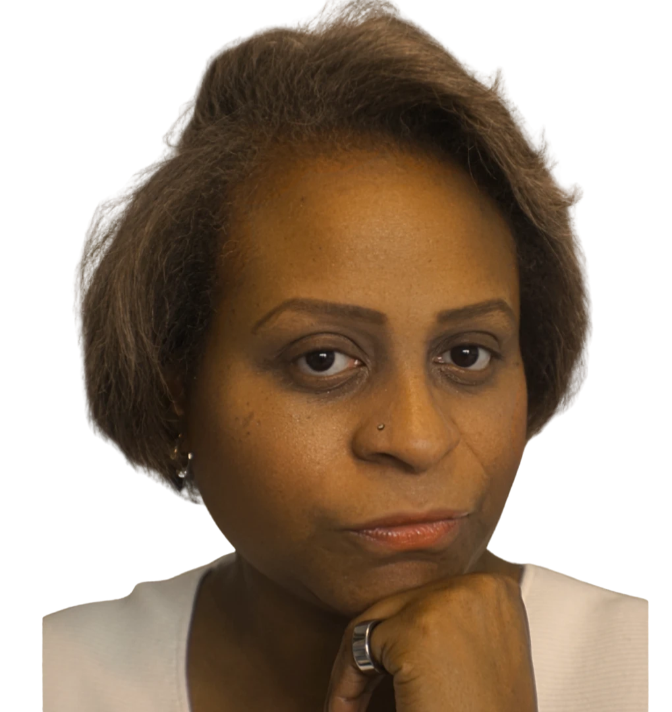

Formerly Allison Stephens
About Dr. Alimayu
The futures of children and families are decided in budgets, boardrooms, and evidence reviews. She has worked in all three for more than twenty-five years.

Dr. Allison Alimayu is a public interest futurist. Her work sits where decisions about children and families are actually made: in how health care is paid for, in the votes of public boards, and in the evidence that funders and regulators accept.
She spent more than a decade in managed care at UnitedHealthcare and DaVita Integrated Care, where she designed a five-state value-based reimbursement program that averaged $8.5 million in monthly savings. In November 2012 she won an open seat on the Nevada Board of Regents and served a six-year term overseeing the state’s public colleges and universities, including as vice chair from December 2016 to June 2017 and as chair of the Audit and Compliance Committee. She later ran for US Congress.
The US Secretary of Health and Human Services appointed her to the Medicare Evidence Development and Coverage Advisory Committee, which reviews the evidence behind national Medicare coverage. She has served on more than a dozen state boards, commissions, and councils since 2010, and in 2026 she was appointed to the North Carolina Oil and Gas Commission.
She holds a PhD in biomedical informatics from Rutgers University. She taught as an assistant professor in the Department of Medicine at Tufts University School of Medicine, and in 2025 she became a Fulbright US Scholar at Research Ireland, the national research funding agency, advising on mission-oriented funding and later on organizational and international strategy. Her TEDx talk at Carlow College in Ireland asks what is missing from science.
Dr. Alimayu published and served in public office as Allison Stephens. Her name changed legally, and records from before 2026, including Nevada Board of Regents records and journal articles, appear under Stephens.
She founded Alimayu Studio, an intellectual atelier for research, policy, education, technology, faith, and impact. Through it she speaks, teaches free masterclasses, advises leaders, and builds initiatives for families.
The record, 2006 to now
Every seat at every table
Choose any line in the ledger
Each line is a role. Hover or tap to read it.
Degrees
PhD, biomedical informatics, Rutgers University, 2020.
Master of Science, industrial and systems engineering, North Carolina A&T State University, in progress.
Master of Education, health promotion, University of Nevada, Las Vegas, 2004.
Bachelor of Science, health care administration, University of Nevada, Las Vegas, 2002.
Recognition
Fulbright US Scholar, 2025 to 2026.
Distinguished Public Service Award, Nevada System of Higher Education, 2019.
Women in Politics Lifetime Achievement Award, Urban Chamber of Commerce, 2016.
Congressional Commendation, US Representative Dina Titus, 2016.
Distinguished Women of Nevada, 2014.
Writing
- When rigor falls short: Policymaking and the limits of health research. American Journal of Public Health, accepted 2026.
- Child physical abuse did not increase during the pandemic. JAMA Pediatrics, 2022, with R. Sege.
- In their own words: Parenting during the COVID-19 pandemic. Journal of Developmental and Behavioral Pediatrics, 2025.
- Using the audit committee agenda to facilitate change. College and University Auditor Journal, 2018.
Beyond the degrees
Professional training
Specialized training that shapes the work in implementation science, climate and health, systems, data, and faith communities.
- Implementation Science InstituteUniversity of Pennsylvania, 2023
- Pan-American Climate Resilient Health SystemsColumbia University, 2023
- Climate Change and HealthYale University, 2019
- HOPE (Healthy Outcomes from Positive Experiences) FrameworkTufts Center for Community-Engaged Medicine, 2021
- Data VisualizationDepict Design Studio and the Nevada Division of Child and Family Services, 2020
- ArcGIS Geospatial Mapping and AnalyticsUniversity of California, Irvine, 2018
- LEAN for Process ImprovementFirefly Consulting and DaVita Training and Development, 2017
- Health MinistryWesley Theological Seminary, 2017
- Political Campaigns TrainingEmerge Nevada, 2010
- Health EconomicsNational Library of Medicine, 2008
- Spanish ImmersionUniversidad Andrés Bello, Santiago, Chile, 2001
- Paralegal StudiesAdvanced Technologies Academy, 1998
Questions people ask
Is Allison Alimayu the same person as Allison Stephens?
Yes. Dr. Alimayu published and served in public office as Allison Stephens, including as an elected member of the Nevada Board of Regents from January 2013 to January 2019. Her name changed legally, and all work from 2026 forward appears under Alimayu.
What degrees does Dr. Alimayu hold?
A PhD in biomedical informatics from Rutgers University, a Master of Education in health promotion and a Bachelor of Science in health care administration from the University of Nevada, Las Vegas, and a Master of Science in industrial and systems engineering in progress at North Carolina A&T State University.
When was Dr. Alimayu vice chair of the Nevada Board of Regents?
From December 2016 to June 2017. She was elected to the board in November 2012 and served a six-year term from January 2013 to January 2019, and she chaired the Audit and Compliance Committee.